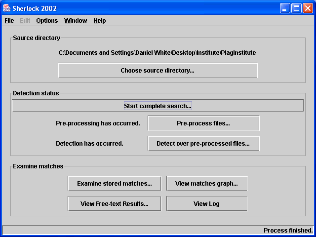
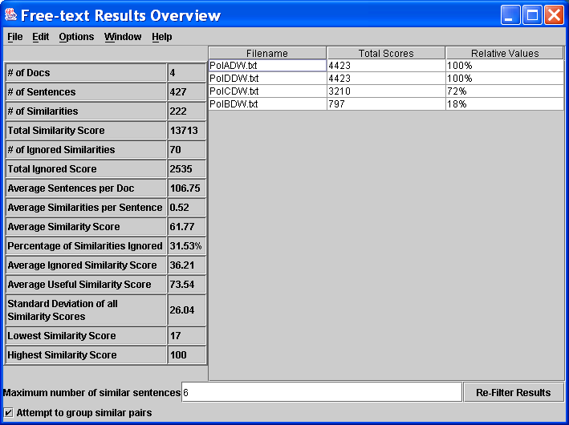
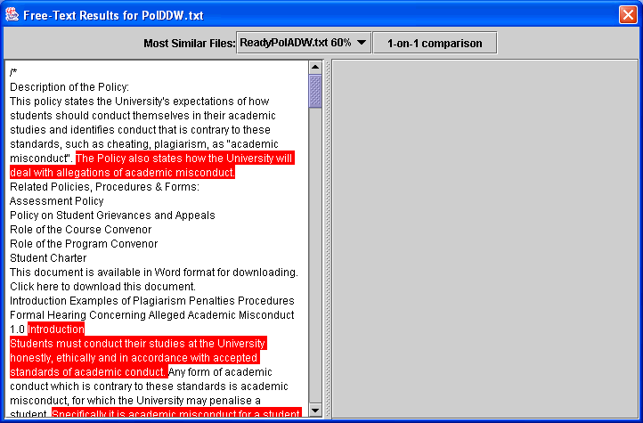
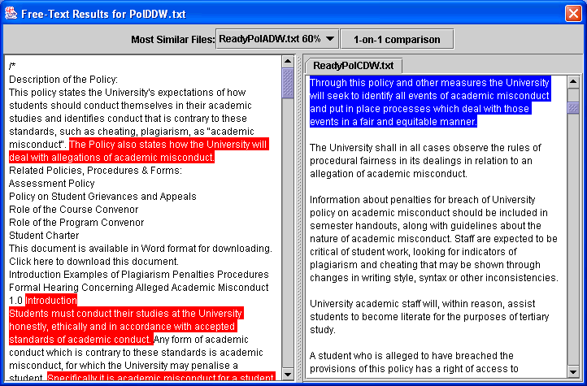
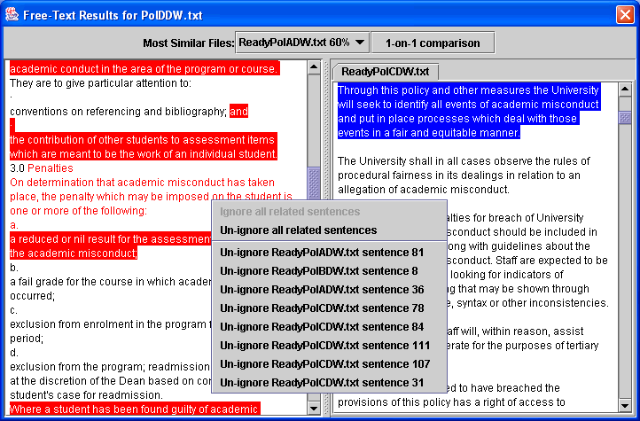
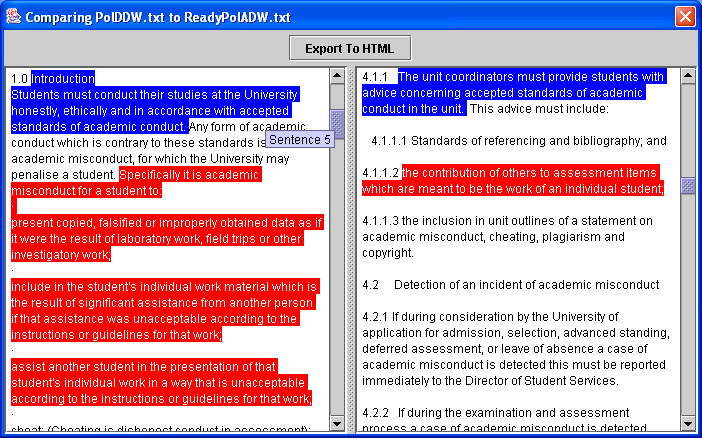
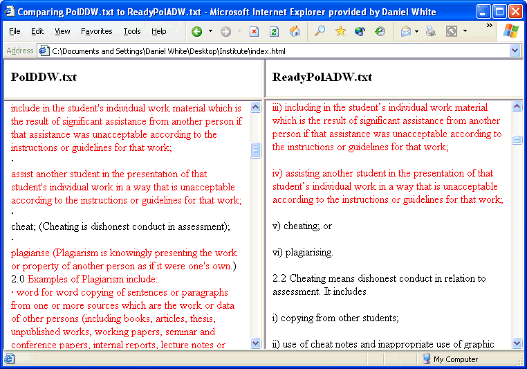

Once Sherlock has completed its plagiarism detection process, the results must be examined to determine if or how much plagiarism has occured among the students.
Detection Finished

Press the "View Free-text Results..." button to display the initial results screen. This is a table of all the submissions, the work that scored highest will apear at the top of the table and as you go further down the work is less and less likely to have large amounts of plagiarism. The score column is Sherlock's calculated score, there is no maximum score and the values will be different for different sets of work. The third column attempts to make it easy to understand the relative value of the scores to one another, the top score will be worth 100% with all otheer scores being some fraction of this.
In general, plagiarised scores will have much higher scores than most other submissions and will therefore appear higher in the table. Some experimentation can be carried out with the results on this screen.
Along the bottom of the window is a setting which controls how Sherlock filters the results from the detection phase. By default, any sentence which has a high similarity with more than 6 other sentences is considered to be too common to be worthwhile in determining results and the program ignores these sentences when calculating scores for a document. The user can try filtering results by altering this threshold and pressing "Re-Filter Results".
In general, setting the threshold higher makes the results less clear. Setting the threshold as low as 1 or 2 will produce much clearer results but may cause some similarities to be missed by the program when calculating scores. Feel free to play around with this setting, as the changes can always be undone.
Group Results

To examine an individual document and see which areas are plagiarised, double-click that row in the table.
Initially, you will see a screen like this:

On the left-hand side of the window is the document you are examining. All the text from that submission will be displayed. Suspicous sentences are highlighted with a RED background and white text. These sentences appear very similar to sentences in other documents. Sentences that are in red text are ones that have been ignored by Sherlock during filtering. Sentences in black text are not suspicous at all.
Left-clicking on a suspicous sentence will produce a menu. This menu will display a list of sentences in other documents which are similar. Sentences nearer the top of this menu are considered to be more suspicous. Clicking one of these sentences will cause Sherlock to display it on the right hand side of the window.

The sentence you are looking at will be highlighted in BLUE.
If you wish to ignore a similarity because you consider it to be a poor match then left click on the sentence, and choose to ignore that sentence. This decision can be reversed later should you change your mind. It should also be noted that any changes made in the results viewer will be undone if you alter the filtration settings in the Group Results window.

If you have determined that there is a pair of students who are copying from one another a 'cleaner' view of the results can be obtained: Along the top of the results viewer window is a drop down box, this holds the names of the five documents most similar to the one you are examining. By selecting one of those names and pressing the button next to the box, a 1 on 1 comparison of the two files will be displayed. An alternative method of displaying this window is to click on the right-hand text pane when it is displaying the document you wish to compare 1 on 1.
The advantage of the 1-on-1 comparison window is that only the similarities between the two documents are on display, any similarities to other documents are not accessible. This makes it easier to ascertain how much copying has occured between the two documents.

This viewing mode also allows you to export the results to a HTML format, which will be suitable for viewing in a web browser. This format does not offer the same features as Sherlock but is useful for portability to computers that do not have Sherlock installed.
